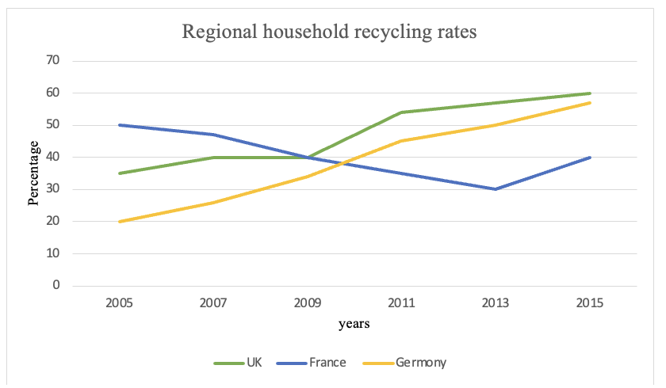

Task 1
You should spend about 20 minutes on this task.
The line graph below shows the household recycling rates in three different countries between 2005 and 2015.
Summarise the information by selecting and reporting the main features making comparisons where relevant.
Write at least 150 words.
Task 2
Write about the following topic:
You should spend about 40 minutes on this task.
In many countries, people are now living longer than ever before. Some
people say an aging population creates problems for governments. Other
people think there are benefits if society has more elderly people.
To what extent do the advantages of having an aging population
outweigh the disadvantages?
Give reasons for your answer and include any relevant examples from your own knowledge or experience.
Write at least 250 words.